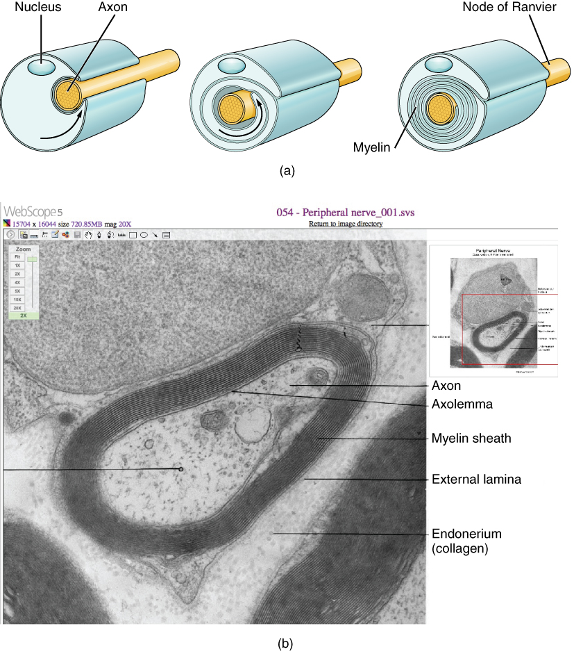
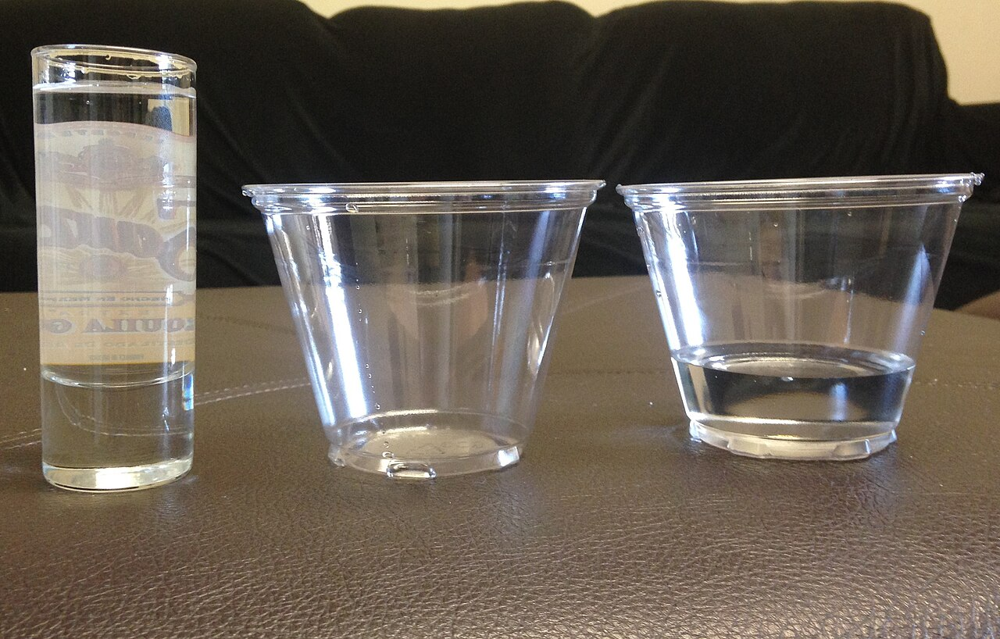
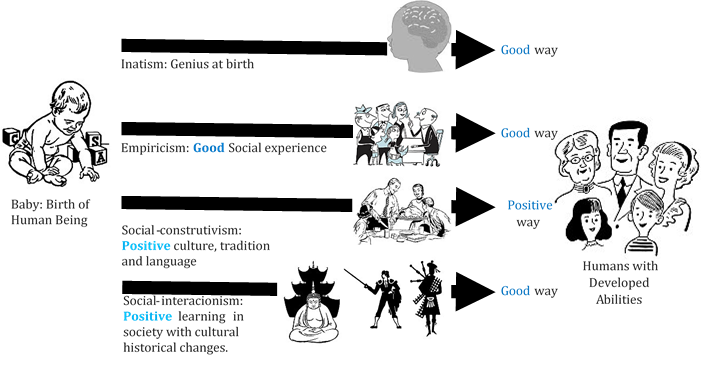
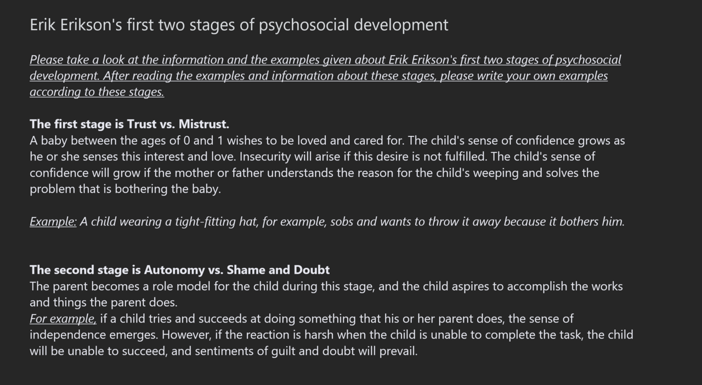

Early Childhood
Somewhere between the second and the sixth birthday, the round-bellied toddler becomes a lean, chattering, imaginative small person. The body slims and steadies, the hand learns to hold a crayon, and the brain wires itself for attention, memory, and self-control. Meanwhile the mind fills with symbols — words, pretend, and drawings that stand for a world the child is only beginning to reason about. This chapter follows the preschool years across four fronts at once: the growing body and maturing brain, the leaps and limits of preoperational thought, the social roots of thinking and language, and the emerging self who plays, feels, and is being shaped by the adults nearby.
By the end of this chapter you can
- Describe patterns of physical growth and the sequence of gross and fine motor skills in the preschool years.
- Explain key events of brain maturation — myelination, synaptic pruning, and lateralization — and link them to behavior.
- Characterize Piaget's preoperational stage, including symbolic thought, and explain egocentrism, centration, and conservation.
- Summarize Vygotsky's zone of proximal development and scaffolding, and contrast his view of private speech with Piaget's.
- Trace the language explosion — vocabulary growth, fast mapping, and overregularization.
- Describe early-childhood self-concept and emotional regulation, and place Erikson's initiative versus guilt among his eight stages.
- Distinguish the social and cognitive categories of play and the course of gender development.
- Compare Baumrind's four parenting styles and their typical outcomes.
Section 1Body and brain

Growing up and slimming down
After the explosive first two years, growth settles into a slower, steadier climb. A preschooler adds roughly 2 to 3 inches and 4 to 5 pounds a year — nothing like the near-tripling of birth weight seen in infancy. Just as important as the numbers is the change in shape. The top-heavy, round-bellied toddler gradually lengthens and leans: the legs grow faster than the head, the baby fat melts, and the center of gravity drops toward the hips. That new, more adult proportion is one quiet reason a five-year-old can run, climb, and balance in ways a two-year-old cannot. On average boys are slightly taller and heavier than girls, but the overlap is enormous, and individual variation — driven by genes, nutrition, and health — dwarfs the group difference.
The brain does most of the building
No organ changes more in these years than the brain. By about age 5 or 6 the brain has reached roughly 90% of its adult weight, even though the body is nowhere near adult size. The growth is not extra neurons but better wiring. Myelination — the wrapping of axons in fatty insulation — races ahead in the pathways for attention, movement, and hand–eye coordination, and in the corpus callosum, the great bridge between the two hemispheres, so the sides of the brain begin to cooperate smoothly. At the same time the brain prunes: connections that go unused are eliminated in synaptic pruning, sculpting a leaner, more efficient network from the overabundance built in infancy. Lateralization — the specialization of the two hemispheres — advances, and a stable handedness is usually settled by around age five.
What the hands and feet can do
Motor skills unfold in a predictable order, and they split into two families. Gross motor skills use the large muscles for whole-body movement — running, jumping, hopping, climbing, pedaling a tricycle, throwing and catching. Fine motor skills use the small muscles of the hands and fingers for precise work — holding a crayon, buttoning, using a spoon, cutting with scissors, and eventually copying shapes and letters. Fine motor control lags behind gross motor control because it depends on slower-maturing brain regions, which is why a four-year-old can gallop across a yard yet still struggle to tie a shoe. Drawing shows the progression beautifully: aimless scribbles near age two give way to deliberate shapes near three, and to the charming "tadpole" people — a head with legs sticking straight out — by three or four.
| Around age | Gross motor | Fine motor |
|---|---|---|
| 2–3 years | Runs, kicks a ball, walks up stairs, pedals a tricycle | Scribbles, stacks a few blocks, turns pages |
| 3–4 years | Jumps with both feet, hops on one foot, climbs | Draws simple shapes, uses child scissors, feeds self neatly |
| 4–5 years | Catches a bounced ball, throws overhand, balances briefly | Copies a square, draws a person, dresses with little help |
| 5–6 years | Skips, runs smoothly, rides with training wheels | Copies letters, cuts on a line, begins to tie laces |
- Preschool growth is slow and steady (~2–3 in and 4–5 lb/yr) and the body leans out into more adult proportions.
- The brain reaches ~90% of adult weight by age 5–6, driven by myelination, synaptic pruning, and lateralization — not new neurons.
- Gross motor (large-muscle) skills mature ahead of fine motor (small-muscle) skills.
- Motor and drawing skills follow a predictable cephalocaudal and proximodistal order.
Section 2Preoperational thinking

The rise of the symbol
Jean Piaget called the years from about 2 to 7 the preoperational stage — the second of his four stages, following the sensorimotor infant and preceding the concrete-operational schoolchild. The stage's crowning achievement is the symbolic function: the ability to let one thing stand for another. A word stands for an object, a scribble stands for a dog, a banana becomes a telephone, and a cardboard box becomes a spaceship. This single power drives the explosion of language, the flowering of pretend play, and the beginnings of drawing. The child can now think about things that are not present, remember and re-enact events (deferred imitation), and carry a growing mental world around inside the head.
Why it is called pre-operational
The name is a warning as much as a label. An "operation," for Piaget, is a reversible mental action that follows logical rules — and the preschooler does not yet have them. Several limits define the stage. Egocentrism is the difficulty of seeing a situation from another person's viewpoint; in Piaget's famous three-mountains task, the child assumes a doll on the far side of a model sees exactly what the child sees. Centration is the tendency to fix on one striking feature and ignore the rest, which produces failures of conservation — the understanding that quantity stays the same despite changes in appearance. Pour a short, wide glass of juice into a tall, thin one and the child declares there is now "more," centering on the height and ignoring the width, unable to mentally reverse the pour. Add a dash of animism (believing the sun or a teddy bear has feelings) and precausal reasoning, and you have a mind that is imaginative and fast but not yet logical.
| Limitation | What it means | Classic sign |
|---|---|---|
| Egocentrism | Cannot easily take another's point of view | Three-mountains task; "hiding" by covering own eyes |
| Centration | Focuses on one feature, ignores others | Fails conservation of liquid or number |
| Irreversibility | Cannot mentally undo a transformation | "It's more now" after the juice is poured |
| Animism | Attributes life and feelings to objects | "The cloud is chasing us" |
| Appearance–reality | Confuses how things look with how they are | A sponge painted like a rock "is" a rock |
Piaget under revision
Later researchers showed that Piaget often underestimated the preschooler, because his tasks were confusing or unfamiliar. When the three-mountains problem is replaced with a simple game of hiding a boy doll from "policeman" dolls, even three- and four-year-olds take others' viewpoints well. And a new landmark appears around age 4: a theory of mind, the understanding that other people have beliefs — even false beliefs — that differ from one's own. In the classic false-belief test, a child watches a toy moved while a character is away; younger children say the character will look where the toy really is, while by about four most correctly say the character will look where she last saw it. Symbolic, egocentric, and increasingly mind-reading all at once — the preoperational child is more capable than Piaget's stark stage suggests.
- Piaget's preoperational stage (~2–7) is defined by the symbolic function — words, pretend, and drawing.
- Its limits are egocentrism, centration, and irreversibility, which together explain failures of conservation.
- Simpler tasks reveal that Piaget underestimated young children's abilities.
- A theory of mind — grasping others' (even false) beliefs — typically emerges around age 4.
Section 3Vygotsky and language

Thinking is social first
Where Piaget pictured a little scientist exploring the world largely on his own, the Russian psychologist Lev Vygotsky argued that cognition grows out of relationships. In his sociocultural theory, a child first performs a skill with a more capable partner — a parent, older sibling, or teacher — and only later performs it alone. The engine of this hand-off is the zone of proximal development (ZPD): the gap between what a child can do independently and what the child can do with guidance. Learning happens most powerfully inside that zone — on tasks just beyond the child's solo reach but within reach with help.
Scaffolding and private speech
The help itself has a name: scaffolding, the practice of adjusting support to the child's need — more when the task is hard, less as competence grows, and eventually none at all, like the temporary framework taken down once a building can stand. A good scaffolder breaks a puzzle into steps, offers a hint at the sticking point, and hands back control as soon as the child can carry it. Vygotsky also reinterpreted a behavior Piaget had dismissed. When preschoolers talk out loud to themselves — "now the red piece goes here" — Piaget saw pointless egocentric speech. Vygotsky saw private speech: a tool for guiding one's own thinking that children use most when a task is difficult, and that gradually goes underground to become the silent inner speech of adult self-direction.
| Concept | What it is | In practice |
|---|---|---|
| Zone of proximal development | The gap between solo and assisted performance | Aim teaching just above the child's independent level |
| Scaffolding | Support tuned to the child's need, then withdrawn | Hint, break into steps, hand back control |
| More knowledgeable other | The partner who provides the guidance | Parent, teacher, or a slightly older peer |
| Private speech | Self-directed talk that guides thinking | Increases on hard tasks; becomes inner speech |
The language explosion
Nothing showcases early-childhood learning like the growth of words. A typical two-year-old commands a few hundred words; a six-year-old understands on the order of 10,000. Much of this comes from fast mapping — forming a rough idea of a new word's meaning after only one or two exposures, without formal teaching. Grammar blossoms too, from two-word telegraphic phrases to full sentences with tense, plurals, and questions. A revealing error marks the progress: overregularization, in which the child applies a newly learned rule too broadly — "I goed" or "two foots." Far from a step backward, these mistakes prove the child has extracted the rule (add -ed, add -s) rather than merely memorizing words. Rich conversation, shared book-reading, and responsive adults — exactly the scaffolding Vygotsky described — pour fuel on this fire.
- Vygotsky's sociocultural theory holds that thinking develops through social interaction, then becomes internal.
- The zone of proximal development is the space between solo and assisted performance; scaffolding is support tuned to the child and then withdrawn.
- Vygotsky read private speech as a self-guidance tool that becomes silent inner speech — not Piaget's aimless egocentric speech.
- Vocabulary rockets to ~10,000 words by age 6 via fast mapping; overregularization reveals rule-learning.
Section 4Self and emotions

Who am I? The early self-concept
Ask a four-year-old to describe herself and you will hear something concrete and usually glowing: "I have a red bike, I can run super fast, and I know my ABCs." The early self-concept is built from observable features — possessions, physical traits, and skills — rather than inner qualities, and it is famously unrealistically positive. Preschoolers tend to overestimate their abilities and cannot yet hold two opposing ideas about themselves at once ("good at some things, bad at others"). This rosy, all-or-nothing self-image is not vanity; it reflects the same cognitive limits — centration, trouble with the abstract — seen in Piaget's stage, and it gives children the confidence to try.
Feeling, and managing the feeling
Early childhood brings a new class of feelings, the self-conscious emotions — pride, shame, guilt, and embarrassment — which require a sense of self plus an awareness of standards to measure it against. A child can now feel proud of a tower she built or guilty for a toy she grabbed. Alongside these comes real progress in emotional regulation: the growing ability to manage the intensity and expression of feelings. Fueled by maturing frontal-lobe control and by coaching from adults, preschoolers begin to use strategies — looking away from a temptation, talking themselves through a fear, seeking a hug — and to name and read emotions in others, a foundation for empathy and cooperation. Tantrums fade not because feelings weaken but because control strengthens.
| Erikson stage | Approximate age | Central question | Virtue |
|---|---|---|---|
| Trust vs. mistrust | Infancy | Can I count on my world? | Hope |
| Autonomy vs. shame & doubt | Toddler | Can I do things myself? | Will |
| Initiative vs. guilt | Early childhood | Can I plan and carry out my own ideas? | Purpose |
| Industry vs. inferiority | School age | Am I competent among peers? | Competence |
Initiative versus guilt
The preschool years map onto the third of Erik Erikson's eight psychosocial stages: initiative versus guilt. Bursting with new motor and language powers, the child now invents games, assigns roles, asks endless questions, and launches ambitious plans ("let's build a fort!"). When adults encourage this drive — answering the questions, allowing the messy project — the child gains a sense of purpose. When initiative is met with constant criticism or control, the child may instead develop an oppressive sense of guilt over wanting to act at all. The healthy resolution is not unlimited freedom but initiative tempered by conscience: doing, planning, and daring, within reasonable limits.
- Early self-concept is concrete, skill-based, and unrealistically positive — a reflection of preoperational limits.
- Self-conscious emotions (pride, shame, guilt, embarrassment) require self-awareness plus standards.
- Emotional regulation improves with frontal-lobe maturation and adult coaching.
- Early childhood is Erikson's initiative versus guilt stage, yielding the virtue of purpose.
Section 5Play and parenting

The serious work of play
Play is not the opposite of learning; for a preschooler it is learning. Researcher Mildred Parten described how play grows more social with age, moving from solitary and onlooker play, through parallel play (children side by side, doing the same thing but not together), to associative and finally cooperative play, in which children share goals and roles. Play also varies in cognitive content: functional (simple repeated movement), constructive (building), sociodramatic (pretend with plots and parts — "you be the doctor"), and games with rules. Sociodramatic play is a workshop for the whole self: children practice symbols, negotiate with peers, take others' perspectives, and rehearse emotional control, all disguised as fun.
Becoming a boy or a girl
Gender is one of the first social categories a child masters. By about age 2 to 3, children reach gender identity — correctly labeling themselves and others as boys or girls. Understanding deepens in steps famously charted by Lawrence Kohlberg: gender stability (a boy will grow into a man) around four, and gender constancy (gender stays the same despite hair, clothes, or activity) by about six or seven, once the appearance–reality confusion of the preoperational stage fades. Meanwhile children absorb gender roles from every direction — watching and imitating models (social learning) and organizing what they see into mental gender schemas that then steer attention and memory. A striking, near-universal result is gender segregation: given the choice, preschoolers strongly prefer to play with same-sex peers.
Four ways to parent
How adults respond to all this initiative matters enormously. Diana Baumrind identified parenting styles along two dimensions — warmth (responsiveness) and control (demandingness) — producing four patterns. Authoritative parents are high in both: warm, but with firm, explained expectations, and they raise the most competent, self-reliant children on average. Authoritarian parents are high in control but low in warmth: strict and unexplained ("because I said so"), linked to more anxious, less confident children. Permissive parents are warm but under-demanding, tied to more impulsive children who struggle with limits. Uninvolved (neglectful) parents are low in both, the pattern with the poorest outcomes. These links are averages, not destiny, and their strength varies across cultures and circumstances — firm control, for instance, carries different meaning in different communities.
| Style | Warmth | Control | Typical child outcome |
|---|---|---|---|
| Authoritative | High | High | Self-reliant, socially competent, good self-control |
| Authoritarian | Low | High | Obedient but anxious, lower self-esteem |
| Permissive | High | Low | Warm but impulsive, trouble with limits |
| Uninvolved | Low | Low | Poorest across social and academic domains |
- Play grows more social (Parten: solitary → parallel → cooperative) and includes crucial sociodramatic pretend.
- Gender identity forms by 2–3; gender constancy arrives by ~6–7; gender segregation in play is near-universal.
- Baumrind's styles vary on warmth and control; authoritative parenting predicts the best average outcomes.
- Parenting–outcome links are averages shaped by culture and context, not fixed rules.
The chapter in one breath
- Preschool growth is slow and steady while the body leans out; the brain hits ~90% of adult weight through myelination, pruning, and lateralization.
- Gross motor skills precede fine motor skills, following head-to-toe and center-out order.
- Piaget's preoperational stage brings symbolic thought but is limited by egocentrism, centration, and failures of conservation; a theory of mind emerges near age 4.
- Vygotsky's zone of proximal development and scaffolding make thinking social first; private speech guides the child toward inner speech.
- The language explosion reaches ~10,000 words by age 6 through fast mapping, with overregularization revealing rule-learning.
- Early self-concept is concrete and rosy; self-conscious emotions and emotional regulation emerge; Erikson's stage is initiative versus guilt.
- Play grows social and dramatic, gender understanding advances toward constancy, and authoritative parenting — warmth plus structure — predicts the best outcomes.
ReferenceWords worth knowing
A quick reference for the terms in this chapter — skim it now, or circle back whenever a word trips you up.
- Animism
- The preoperational tendency to attribute life, feelings, or intentions to inanimate objects, as in "the cloud is chasing us."
- Authoritative parenting
- A style high in both warmth and control — affectionate with firm, reasoned expectations — linked to the best average child outcomes.
- Centration
- Focusing on a single striking feature of a situation while ignoring the others; a chief cause of conservation errors.
- Conservation
- The understanding that a quantity stays the same despite a change in its appearance; typically absent before the concrete-operational stage.
- Egocentrism
- The preoperational difficulty of distinguishing one's own viewpoint from someone else's, illustrated by the three-mountains task.
- Emotional regulation
- The developing ability to manage the intensity and expression of feelings, aided by brain maturation and adult coaching.
- Fast mapping
- Forming a rough meaning for a new word after only one or two exposures, a major driver of the vocabulary explosion.
- Fine motor skills
- Movements of the small muscles of the hands and fingers — drawing, buttoning, cutting — that mature later than gross motor skills.
- Gender constancy
- The realization that one's gender is stable across time and situations regardless of hair, clothing, or activity, reached around age 6–7.
- Gender identity
- The ability to correctly label oneself and others as a boy or a girl, achieved by about age 2–3.
- Gross motor skills
- Whole-body movements using the large muscles — running, jumping, climbing — that mature ahead of fine motor skills.
- Initiative versus guilt
- Erikson's third psychosocial stage, in which the preschooler's drive to plan and act yields either a sense of purpose or a sense of guilt.
- Myelination
- The wrapping of axons in insulating fatty sheaths, which speeds neural signaling and advances rapidly in early childhood.
- Overregularization
- Applying a grammatical rule too broadly, as in "goed" or "foots" — evidence that the child has learned the rule.
- Preoperational stage
- Piaget's second stage (~2–7), marked by symbolic thought but limited by egocentrism, centration, and irreversibility.
- Private speech
- Self-directed talk that Vygotsky viewed as a tool for guiding thinking, later becoming silent inner speech.
- Scaffolding
- Adjusting support to a learner's needs and withdrawing it as competence grows, operating within the zone of proximal development.
- Self-conscious emotions
- Feelings such as pride, shame, guilt, and embarrassment that require a sense of self and awareness of standards.
- Sociodramatic play
- Cooperative pretend play with plots and assigned roles, a rich workshop for symbols, perspective-taking, and self-control.
- Synaptic pruning
- The elimination of unused neural connections, sculpting a more efficient brain from the surplus built in infancy.
- Theory of mind
- The understanding that others have beliefs, desires, and knowledge — including false beliefs — that may differ from one's own, emerging around age 4.
- Zone of proximal development
- Vygotsky's gap between what a child can do alone and what the child can do with guidance from a more knowledgeable other.